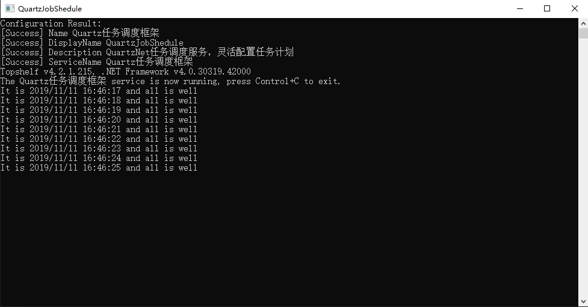
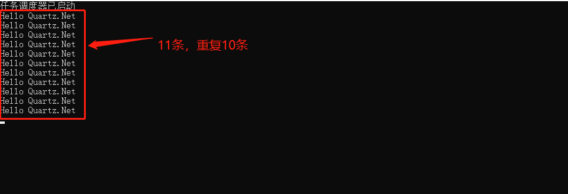
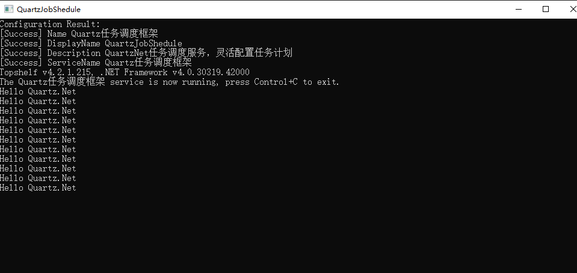

Topshelf是创建Windows服务的另一种方法，老外的一篇文章Create a .NET Windows Service in 5 steps with Topshelf通过5个步骤详细的介绍使用使用Topshelf创建Windows 服务。Topshelf是一个开源的跨平台的宿主服务框架，支持Windows和Mono，只需要几行代码就可以构建一个很方便使用的服务宿主。
1 public class TownCrier
2 {
3 private readonly Timer timer;
4 public TownCrier()
5 {
6 timer = new Timer(1000) { AutoReset = true };
7 timer.Elapsed += (sender,eventArgs) => Console.WriteLine($"It is {DateTime.Now} and all is well");
8 }
9 public void Start()
10 {
11 timer.Start();
12 }
13 public void Stop()
14 {
15 timer.Stop();
16 }
17
18 }
19
20 static void Main(string[] args)
21 {
22 HostFactory.Run(x =>
23 {
24 x.Service<TownCrier>(s =>
25 {
26 s.ConstructUsing(name => new TownCrier());
27 s.WhenStarted(tc => tc.Start());
28 s.WhenStopped(tc => tc.Stop());
29 });
30 x.RunAsLocalSystem();
31 x.SetDescription("QuartzNet任务调度服务，灵活配置任务计划");
32 x.SetDisplayName("QuartzJobShedule");
33 x.SetServiceName("Quartz任务调度框架");
34 }
35 );
36 }
在项目的开发过程中，难免会遇见后需要后台处理的任务，例如定时发送邮件通知、后台处理耗时的数据处理等，这个时候可以使用Quartz.Net。
Quartz.Net是纯净的，它是一个.Net程序集，是非常流行的Java作业调度系统Quartz的C#实现。
Quartz.Net是一款功能齐全的任务调度系统，从小型应用到大型企业级系统都能适用。功能齐全体现在触发器的多样性上面，即支持简单的定时器，也支持Cron表达式；即能执行重复的作业任务，也支持指定例外的日历；任务也可以是多样性的，只要继承IJob接口即可。
对于小型应用，可以集成到你的系统中，对于企业级系统，它提供了Routing支持，提供了Group来组织和管理任务，此外还有持久化、插件功能、负载均衡和故障迁移等满足不同应用场景的需要。
1 /// <summary>
2 /// 继承IJob的一个任务
3 /// </summary>
4 public class HelloQuartzJob : IJob
5 {
6 public Task Execute(IJobExecutionContext context)
7 {
8 return Task.Factory.StartNew(() =>
9 {
10 Console.WriteLine("Hello Quartz.Net");
11 });
12 }
13 } 1 static async Task Main(string[] args)
2 {
3 //从工厂中获取调度器实例
4 var scheduler = await StdSchedulerFactory.GetDefaultScheduler();
5
6 //创建作业和触发器
7 var jobDetail = JobBuilder.Create<HelloQuartzJob>().Build();
8 var trigger = TriggerBuilder.Create()
9 .WithSimpleSchedule(m =>
10 {
11 m.WithRepeatCount(10).WithIntervalInSeconds(1);
12 })
13 .Build();
14
15 Console.WriteLine($"任务调度器已启动");
16
17 //添加调度
18 await scheduler.ScheduleJob(jobDetail, trigger);
19
20 await scheduler.Start();
21 Console.ReadKey();
22 }
1 public class JobConfigure
2 {
3 private IScheduler scheduler;
4
5 public async Task GetJobConfigure()
6 {
7 //从工厂中获取调度器实例
8 scheduler = await StdSchedulerFactory.GetDefaultScheduler();
9 //创建作业和触发器
10 var jobDetail = JobBuilder.Create<HelloQuartzJob>().Build();
11 var trigger = TriggerBuilder.Create().WithSchedule(SimpleScheduleBuilder.RepeatSecondlyForever(1).WithRepeatCount(10))
12 .Build();
13 //添加调度
14 await scheduler.ScheduleJob(jobDetail, trigger);
15 }
16
17 public void Start()
18 {
19 this.GetJobConfigure().Wait();
20 scheduler.Start();
21 }
22 public void Stop()
23 {
24 scheduler.Shutdown(true);
25 }
26
27 } 1 static void Main(string[] args)
2 {
3 HostFactory.Run(x =>
4 {
5 x.Service<JobConfigure>(s =>
6 {
7 s.ConstructUsing(name => new JobConfigure());
8 s.WhenStarted(tc => tc.Start());
9 s.WhenStopped(tc => tc.Stop());
10 });
11 x.RunAsLocalSystem();
12 x.SetDescription("QuartzNet任务调度服务，灵活配置任务计划");
13 x.SetDisplayName("QuartzJobShedule");
14 x.SetServiceName("Quartz任务调度框架");
15 }
16 );
17 }